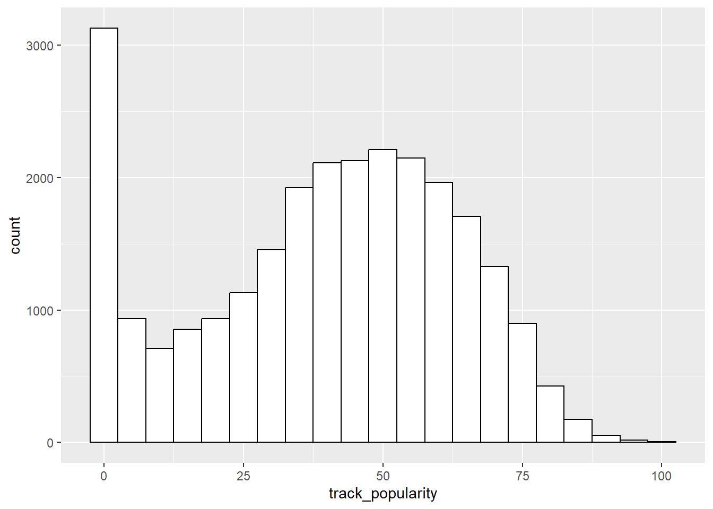
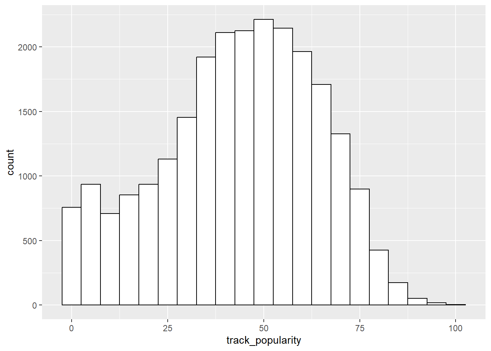

The NSC-R Workshops is a series of one-hour online (currently hybrid) instructional sessions to support participants in developing their data science skills in R, and to promote open science principles.
The NSC-R workshop meetings are organized by a team affiliated with the Netherlands Institute for the Study of Crime and Law Enforcement (NSCR), but they are open to everyone, regardless of affiliation or skill level.
There are workshops on specific topics (e.g. network analysis, missing values) and Tidy Tuesday workshops that cover more basic skills and materials.
The NSC-R Tidy Tuesday workshop sessions are inspired by the Tidy Tuesday initiative, which is aimed at providing a safe and supportive forum for individuals to practice their data processing and visualization skills in R while working with real-world data.
In this workshop, which took place on May 9, 2023, I tried to model song popularity using a dataset of tracks on Spotify.
Even if you have no interest in popular music at all, you may find these workshop materials instructive for getting ideas on how to do regression analysis in R.
I did not delve into statistics, but rather showed how to get linear regression and logistic regression models running in R and generate useful and reproducible output. The focus was on ordinary least squares and logistic regression, but the techniques are easily be generalized to other regression models.
Packages for this session
I like to work with functions in the tidyverse suite of packages, so I load them right at the start.
library(tidyverse)
── Attaching core tidyverse packages ──────────────────────── tidyverse 2.0.0 ──
✔ dplyr 1.1.1 ✔ readr 2.1.4
✔ forcats 1.0.0 ✔ stringr 1.5.0
✔ ggplot2 3.4.2 ✔ tibble 3.2.1
✔ lubridate 1.9.2 ✔ tidyr 1.3.0
✔ purrr 1.0.1
── Conflicts ────────────────────────────────────────── tidyverse_conflicts() ──
✖ dplyr::filter() masks stats::filter()
✖ dplyr::lag() masks stats::lag()
ℹ Use the conflicted package (<http://conflicted.r-lib.org/>) to force all conflicts to become errors
Read the data
I will use data from Spotify that were analyzed in the ‘real’ Tidy Tuesday session of January 21, 2020. This was when the COVID pandemic just started. Remember? You can find the code and findings for that session here.
I noticed that a unique track (song) is listed multiple times in the data if it appears on multiple albums of an artist (e.g. a “greatest hits” compilation) or an album version with bonuses. It can also appear multiple times in the data if it is in multiple Spotify playlists. Here is an example:
# A tibble: 4 × 4
track_artist track_name track_album_name playlist_name
<chr> <chr> <chr> <chr>
1 Ed Sheeran Thinking out Loud x (Wembley Edition) "Post-teen pop"
2 Ed Sheeran Thinking out Loud x (Wembley Edition) "Today's Hits 2000-Present"
3 Ed Sheeran Thinking out Loud x (Deluxe Edition) "Unplugged Hits \U0001f4e3"
4 Ed Sheeran Thinking out Loud x (Deluxe Edition) "2010 - 2011 - 2012 - 2013…
To correct for this feature, I select a single instance of each song and save the result in a new data frame which a label spotify_songs_clean. I
obviously lose information on album and playlist appearance, but that is no problem for my analysis. To get rid of unwanted information, I unselect album and playlist variables.
spotify_songs_clean <-# start with the raw data spotify_songs |># define groups group_by(track_artist, track_name) |># select only the first instance of each groupfilter(row_number() ==1) |># the grouping is no longer neededungroup() |># remove variables no longer neededselect(-track_id, -track_album_id, -track_album_name,-track_album_release_date, -playlist_name, -playlist_id, -playlist_genre,-playlist_subgenre)
Nominal (categorical) and dichtomous (binary) variables
A nominal or categorical variable is a variable for which the values have no intrinsic natural order. For example, there is no natural order in car brands (“Mercedes”, “Toyota”, “Ford”, “Renault”, …), color (“Red”, “Green”, “Blue”) or gender (“Female”, “Male”, “Non-binary”), irrespective of whether their values are coded as numbers in your dataset. You could code car brand with numbers in your data for practical reasons (“Mercedes” = 1, “Toyota” = 2, “Ford = 3), but that would not mean that Toyota would be ‘larger’ in some way than Mercedes.
A dichotomous or binary variable is a variable that can only take on two different values. If these values are \(0\) and \(1\) they are also referred to as dummy variables.
In the Spotify dataset, I create one nominal (categorical) and one binary (dichotomous) variable by converting their original numerical versions into factors, which is the term used in R to refer to nominal variables. These are mode and key. mode is a binary variable. It indicates whether the song is in a happy-sounding major scale or in a melancholic-sounding minor scale. key is a nominal variables. It indicates in which musical key the song is played. No problem if you have no idea what this means. There are 12 different keys.
I give the two new factor variables the name of their original versions with an “_fct” suffix. This will help me remember they are factor varibales when I seen their names.
Before trying to model song popularity, let me first get in impression of how popularity is distributed. I like ggplot in black and white but have its grey default, so:
spotify_songs_clean_fct |>ggplot() +geom_histogram(aes(x = track_popularity), color ="black",fill ="white",binwidth =5)

Because this looks pretty much like a normal distribution except for the large number of songs with zero popularity, I will remove rows with missing values and, store the result in yet another version of the data.
spotify_songs_clean_NA |>ggplot() +geom_histogram(aes(x = track_popularity), color ="black",fill ="white",binwidth =5)

Now I am ready to conduct a regression analysis. The lm function is for ordinary least squares regression. Like all regression functions in R (that I know about) the lm function needs at least two arguments. One is the data used for estimation, the other is the equation to be estimated (which is called a formula in R). The formula must contain only variables included in the data.
I called the lm function with two arguments. The first is the formula argument. A formula is an equation with the right-hand side separated from the left-hand side with a tilde symbol (“~”). In regression contexts, the left-hand side contains the dependent variable, the right-hand side the independent variables. Thus, the equation Y ~ X1 + X2 says “estimate a linear regression of Y on X1 and X2”. The equation track_popularity ~ mode says “estimate a linear regression of track_popularity on mode. Note that the regression coefficients to be estimated are implicit. Thus, if the complete regression equation is \[ Y = \beta_{0} + \beta_{1} \times X_{1} +
\beta_{2} \times X_{2}\]
I do not need to specify the \(\beta\) coefficients.
By default, the lm function will print just two things, namely (1) an echo of the data and formula arguments, and (2) the estimated values of the unstandardized coefficients, which here are the intercept (constant term) and the coefficient of mode.
Thus, according to the model, the mean popularity of songs in a minor scale is 42.88, while songs in a major scale score almost 1 point (0.98) higher. Not much, on a range between 0 and 100, but statistically significant nevertheless.
As we will see in a minute, a lot of additional information is being generated when you estimate a regression model, but it will be hidden if you just call the lm function. Funny enough, the summary function provides more details.
Call:
lm(formula = track_popularity ~ mode_fct, data = spotify_songs_clean_NA)
Residuals:
Min 1Q Median 3Q Max
-42.856 -13.856 2.125 15.144 55.125
Coefficients:
Estimate Std. Error t value Pr(>|t|)
(Intercept) 42.8751 0.2021 212.118 < 2e-16 ***
mode_fctmajor 0.9812 0.2690 3.647 0.000265 ***
---
Signif. codes: 0 '***' 0.001 '**' 0.01 '*' 0.05 '.' 0.1 ' ' 1
Residual standard error: 20.6 on 23859 degrees of freedom
Multiple R-squared: 0.0005573, Adjusted R-squared: 0.0005154
F-statistic: 13.3 on 1 and 23859 DF, p-value: 0.0002654
You may wonder why the independent variable has been labeled mode_fctmajor in the output. When the lm function encounters a factor (i.e., a nominal variable) in the formula, it creates a set of dummy (0/1) variables, one for each category except the first category. These dummy variables are labeled with the name of the factor followed by the label of the category. So, because minor is the first category, for mode this becomes mode_fctmajor. I will now estimate a model with key_fct as the only independent variable. Are there any specific keys that make a song more popular than song in other keys?
As there are 12 different keys, the lm function has automatically created 11 dummy variables (from “C#” to “B”), omitting the “C” key which is the reference category.
The summary function can be very practical to quickly display the main features of a model on screen, but my advise is to use it only interactively and not use it in your scripts. Here is why.
To use the information (such as estimates, standard errors, p-values, \(R^2\)) and do something useful with it, you better save the results of the lm function in an R object. To help myself remember that the object is output of the lm function, I label it model_lm_output_1.
All details of the estimated model are now in model_lm_output_1, and I can still call the summary function to see it on screen:
model_lm_output_1 |>summary()
Call:
lm(formula = track_popularity ~ mode_fct, data = spotify_songs_clean_NA)
Residuals:
Min 1Q Median 3Q Max
-42.856 -13.856 2.125 15.144 55.125
Coefficients:
Estimate Std. Error t value Pr(>|t|)
(Intercept) 42.8751 0.2021 212.118 < 2e-16 ***
mode_fctmajor 0.9812 0.2690 3.647 0.000265 ***
---
Signif. codes: 0 '***' 0.001 '**' 0.01 '*' 0.05 '.' 0.1 ' ' 1
Residual standard error: 20.6 on 23859 degrees of freedom
Multiple R-squared: 0.0005573, Adjusted R-squared: 0.0005154
F-statistic: 13.3 on 1 and 23859 DF, p-value: 0.0002654
To make sure that my regression results are reproducible, I should never estimate a model and manually copy and paste the results. This is very error-prone and not reproducible.
Interactions
You are probably aware that in a regression model, the relation between an independent variable and the dependent variable may be affected by the value of a third variable. The resulting effect is called an interaction or interaction effect. For example, the relation between Y and X1 might depend on the value of X2
To include an interaction term in your model, you could create a new variable in your dataset that represents the interaction, typically by multiplying to two independent variables involved (you need to convert the factor variable mode to numeric (0,1) to do this, and mentally keep track of the fact that 0 means the song is in minor key and 1 means the song is in major key):
Alternatively, you could use a shorthand notation to include the interaction effect without creating a new variable in your dataset (note that here I do not use the numerical version modebut the factor version mode_fct).
The colon symbol (“:”) can be read as “create a variable that is the multiplication of the variables on both sides of me, and include the result as a variable in the equation”. This is shorter, and saves you from remembering how mode was coded.
Because in most situations you will also want to include the main effects of the variables involved in the interaction, there is another shorthand notation for this:
If you participated in the workshop, you may remember that the results of the first method of estimating interactions (in which you manually create an interaction term by multiplying the interacting variables) did not completely match those of the two subsequent methods. To understand what error I made and how this affected the results, read the postscriptum at the bottom of this post.
Standardized estimates
In some situations you would like to have standardized estimates, i.e., estimates after the dependent and all independent variables have been normalized to have mean 0 and standard deviation of 1.
There is also a function lm.beta (contained in the package with the same name, lmbeta) that will do this for you. This saves you from standardizing the variables yourself.
#install.packages("lm.beta")library(lm.beta)lm(formula = track_popularity ~ danceability + energy + loudness + speechiness + acousticness + instrumentalness + liveness + valence + tempo + duration_ms, data = spotify_songs_clean_NA_std) |>lm.beta() |>summary()
Tidy workflow: the functions tidy, glance and augment
To make the results of an analysis reproducible, it should be forbidden to copy and paste results from the R Studio console to somewhere else (Excel, Word, or any other software)!
But then how can the results of a regression analysis be stored in a reproducible way?
The three main functions of the package broom help us to maintain a tidy workflow by converting the results of regression models, unlike the summary function, to plain tibbles (dataframes).
tidy is for the coefficients of you model. It returns a dataframe with as many rows as there are independent variables in the model, and includes the estimate, its standard error, the associated test statistics and p-values for each of them.
`glance’ is for the overall model statistics, such as \(R^2\), and contains only a single row.
augment is for residuals and predictions, and contains as many rows as there are observations in your data. I will not discuss augment here.
One advantage is that I can now store these results on disk, possibly after transforming them. Here I will round all numeric variables to 3 decimal digits and save it the file “full_model_estimates.csv”.
The functions in broom not only assist it generating reproducible results, they also help streamline workflows. For example, we might want to visualize our standardized regression coefficients.
Let us see whether we can predict whether a song in in major or minor mode from its other characteristics. I will first display the frequency distribution.
# What is the distribution of mode (major = 1, minor = 0)spotify_songs |>count(mode)
# A tibble: 2 × 2
mode n
<dbl> <int>
1 0 14259
2 1 18574
Because mode is a binary 0/1 dummy variable I can analyze it with the logit model. The logit (also referred to as ‘logistic’) model is one a a series of generalized linear models that can be estimated with the glm function. Like lm, the glm takes a formula and a data argument. In addition, you also need to specific the logit model explicitly.
glm_model_mode <-glm(formula = mode_fct ~ energy + loudness + speechiness + acousticness + instrumentalness + liveness + valence + tempo + duration_ms, data = spotify_songs_clean_NA_std,family =binomial(link ="logit"))
glm_model_mode |>summary()
Call:
glm(formula = mode_fct ~ energy + loudness + speechiness + acousticness +
instrumentalness + liveness + valence + tempo + duration_ms,
family = binomial(link = "logit"), data = spotify_songs_clean_NA_std)
Deviance Residuals:
Min 1Q Median 3Q Max
-1.603 -1.289 1.013 1.061 1.455
Coefficients:
Estimate Std. Error z value Pr(>|z|)
(Intercept) 0.260631 0.013087 19.916 < 2e-16 ***
energy 0.018796 0.021150 0.889 0.37417
loudness -0.053538 0.019100 -2.803 0.00506 **
speechiness -0.118212 0.013240 -8.928 < 2e-16 ***
acousticness 0.017590 0.015861 1.109 0.26742
instrumentalness -0.036847 0.013793 -2.671 0.00755 **
liveness 0.011393 0.013361 0.853 0.39383
valence -0.005552 0.013654 -0.407 0.68426
tempo 0.040659 0.013287 3.060 0.00221 **
duration_ms 0.012419 0.013404 0.927 0.35416
---
Signif. codes: 0 '***' 0.001 '**' 0.01 '*' 0.05 '.' 0.1 ' ' 1
(Dispersion parameter for binomial family taken to be 1)
Null deviance: 32679 on 23860 degrees of freedom
Residual deviance: 32575 on 23851 degrees of freedom
AIC: 32595
Number of Fisher Scoring iterations: 4
I use tidy again to create a data frame with estimates, standard errors, etc.. The exponentiate argument adds odds ratios, and the conf.int and conf.level arguments add 95% confidence intervals. Note that I print the result on screen and also store it on disk.
This looks nice, but there are two things I want to improve. First, in the visualization the order of the terms on the vertical axis is alphabetic, whereas I would like to keep the original order in which I entered the terms in the equation. Second, I would like the title of the vertical axis to become “Song feature” and the title of the horizontal axis to be “Odds ratio”. Here we go:
That’s it for this workshop. Thanks for reading the materials. I hope you found them instructive. If you have any comments, suggestions or questions, please drop me a message at wbernasco@nscr.nl.
Postscriptum
During the workshop I made a mistake that created confusion that I could not immediately resolve. In this postscription I explain what happened and how the resulting anomaly can be explained. It might also be instructive if you did not attend the workshop session. Here is what happened. I created an interaction as follows.
In the first model, the estimate of danceability was 13.138, but in the second model is was 8.462. As I will explain below, it is not a coincidence that the difference, 8.462 - 13.138, equals -4.676, the value of the interaction term. But what happened?
When I used the mutate function I thought that as.numeric(mode_fct) was creating a dummy variable with minor coded as 0 and major coded as 1. But I was wrong. It created a binary variable with minor coded as 1 and major coded as 2. To see this behavior in action, see the following little example:
# A tibble: 5 × 3
var var_fct var_fct_num
<dbl> <fct> <dbl>
1 0 minor 1
2 1 major 2
3 0 minor 1
4 0 minor 1
5 1 major 2
As you can see, the column var_fct_num does not contain 0 and 1, but 1 and 2. This is also what happened when I created the interaction term danceability_x_mode with the mutate function, using the as.numeric(mode_fct) phrase. Thus, I unwillingly multiplied danceability by 1 instead of 0, and by 1 instead of 2. In the main materials above (where I corrected the mistake made in te workshop), I did not use as.mumeric(mode_fct) but just mode (the numeric variable coded 0 and 1).
Let’s explain the outcomes using some math. The model I intended to estimate on all occasions was this one, with mode_fct coded as 0 and 1.
However, because of my mistake I estimated another model in which the second mode_fct was coded as 1 and 2. To recover the intended model, I should replace the second mode_fct in the equation with mode_fct - 1 we get:
Thus, the intended estimate of danceability was \(\beta_{1} - \beta_{3} = 8.462 + 4.676 = 13.138\).
While investigating the issue, I stumbled upon and used a function model.matrix. This function takes as argument an estimated model, and shows how all variables in the equation, including the dummy variables automatically created from factors, are numerically coded.